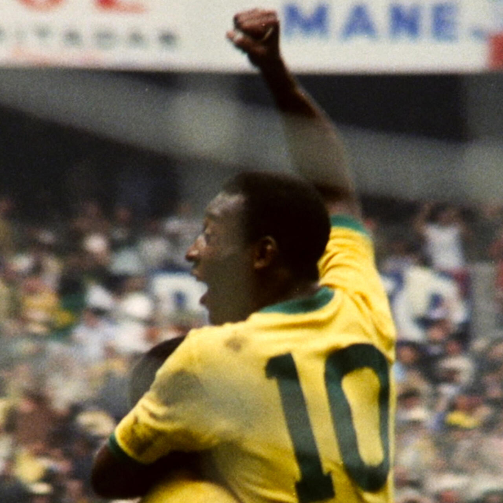
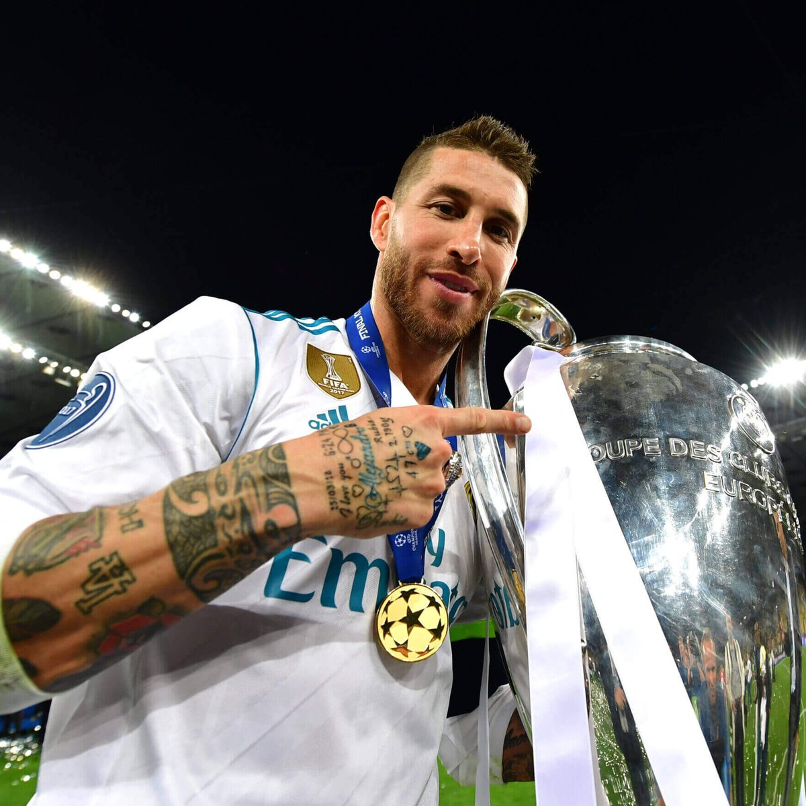
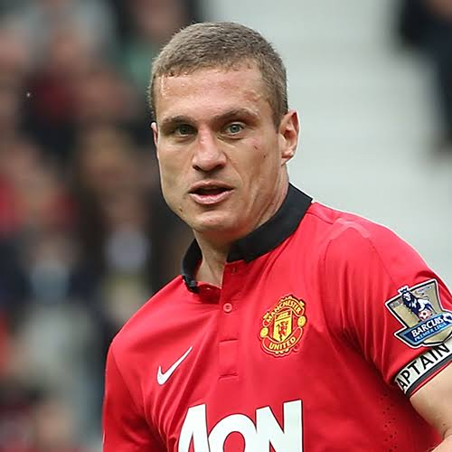

Thomas Müller, a German professional footballer, who plays for Bundesliga club Bayern Munich and the Germany national team.

Cristiano Ronaldo is regarded by many as the best football player to ever play the game. He was born in Portugal, and he plays as a striker.
Alessandro Del Piero is an Italian former professional footballer who mainly played as a deep-lying forward, who played for Juventus.

Zinedine Yazid Zidane is a French professional football manager and former player who played as an attacking midfielder.
Ricardo Kaká is a Brazilian former professional footballer who played as an attacking midfielder, primarily for A.C. Milan and Real Madrid.

Paolo Cesare Maldini is an Italian former professional footballer who played primarily as a left back and centre back for AC Milan and the Italy.
Pelé was a Brazilian professional footballer who was among the most successful sports figures of the 20th century. He won 3 world cups with Brazil.

Sergio Ramos García is a Spanish professional footballer, who is regarded as one of the best defenders of all time, achieving most in Real Madrid.

Ronaldinho is a Brazilian retired professional footballer who played mostly as an attacking midfielder and a winger in A.C Milan, PSG, and Barca.
Nemanja Vidić is a Serbian former professional footballer who played as a centre-back, with Ferdinand, at Manchester United in the early 2000s.

Ronaldo Nazário, is a Brazilian former professional footballer who played as an amazing striker in Barca, Real Madrid, Intern, etc.
Gianluigi Buffon is an Italian former professional footballer who played as one of the best goalkeepers. He goalkeeped at Juventus in Serie A.